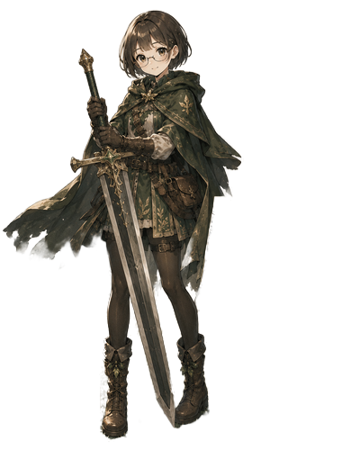

ヒカル
クラス：フォレストブレード

個人データ
- レベル：12
- 属性：風
- 所属：チクゴ王国
能力値
- 推察力：16
- 設計眼：14
- 実装精度：12
- 問題解決力：15
- 表現力：17
- 継続力：13
スキル
- 癒しの風（周囲の味方の緊張を和らげる）
- 森の加護（森系デザインのとき能力上昇）
プロフィール
相手の声に耳を傾け、状況を丁寧に読み解くことを得意とする剣士。
問題の核心を見抜く推察力と、
物事の構造を理解する設計眼を併せ持ち、
戦場でも制作でも、最適な解決策を静かに導き出す。
その落ち着いた姿勢と寄り添う力は、
仲間にとって欠かせない支えとなっている。
制作の意図
ファイアーエムブレムのキャラクター紹介画面のように、
「人となり」や「強み」が世界観の中で自然に伝わるプロフィールを目指しました。
私の長所である推察力や、状況を丁寧に読み取る姿勢を
“剣士としての能力値”に置き換えることで
エンジニアとしての個性とゲームUIの楽しさを表現いたしました。
こだわったポイント
- FEらしいクラス名・所属名を作り、世界観の中で自分の役割が伝わるように構成
- ドットフォントや金色の装飾を使い、FEのステータス画面らしい重厚感を再現
- エンジニアとしての個性（設計眼・実装精度）を世界観を壊さずに組み込む工夫
使用技術
- HTML / CSS